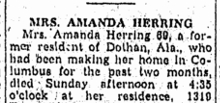
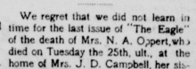
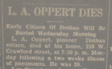

 Obituary for Mary Amanda (Oppert) Herring of Dothan, Alabama and Columbus, Georgia from 1937.
Two obituaries for H. (Henry) Oppert of Barbour, Alabama from 1892, including transcripts and images of the originals.
Obituary for James M. Oppert of Dale, Alabama from 1946 Dothan Eagle.
Obituary for Mary Ella (Oppert) Tew of Houston, Alabama from 1962 Dothan Eagle.
 Obituary for Nancy (Sheppard) Oppert of Alabama from 1903 Dothan Houston Eagle.
 Obituary for Louis A. Oppert of Alabama from 1936 Dothan Eagle.
Obituary for H. Oppert of Clayton, Barbour, Alabama from 1892.
Obituaries for Maggie (Oppert) Lazarus of Valdosta, Georgia from 1962.
 Obituaries for Maggie (Oppert) Lazarus of Valdosta, Georgia from 1962.
Obituaries for Maggie (Oppert) Lazarus of Valdosta, Georgia from 1962.